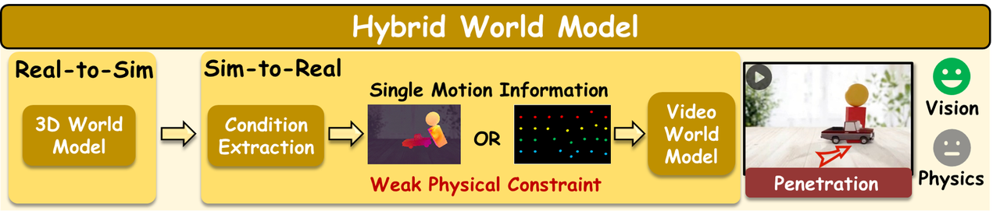

Fysiverse: Towards Physics-Grounded World Model via Enforcing Causal Physical Consistency
Fysiverse: Towards Physics-Grounded World Model via Enforcing Causal Physical Consistency

基于视频生成的世界模型：通过在互联网海量的视频中学习通用的世界知识，以条件生成的方式模拟世界（文/图生视频）。其优点是学习到了文本描述和视频像素的相关性，视觉质量与真实世界一致。但由于这种学习范式学习到的是数据“相关性”而非“因果性”，因此其结果常常违背物理规律。

另一种基于视频的世界模型，隐式世界模型，同样也是通过视频世界模型学习世界的物理规律。然而，这种模型完全在隐空间进行推理，难以通过可视化的方式评估其视觉质量和物理真实性。

基于3D的世界模型：通过“重建-仿真-渲染”的模块化流程，实现对3D世界的推演，由于物理仿真的存在，推演结果是因果的。然而，重建环节需要对物体进行物理参数估计，现有的方案直接采用ChatGPT、Qwen、Gemini等视觉语言模型进行推理，由于推理过程缺乏物理依据，导致物理参数估计常常存在幻觉。此外，重建环节会将环境光、阴影等固定到物体的外观上，导致渲染的结果存在明显的伪影。

混合世界模型：将3D世界模型与2D视频世界模型相结合，提升世界模型推演结果的视觉保真性和物理真实性。其具体方法是，从3D世界模型的物理仿真的结果中提取轨迹信息，随后通过可控视频生成的方式将轨迹信息注入到视频生成模型中。这在一定程度上提升了视频世界模型的物理真实性，但由于轨迹信息不足以描述复杂的物理运动，其推演结果仍然存在物理不准确的缺陷。

我们提出Fysiverse，基于物理的世界模型。基于混合世界模型的架构下，Fysiverse分别在物理属性理解、物理世界推演两方面提出了创新方法。在物理属性理解方面，我们提出PGReason，是基于OmniFysics大模型构建的物理属性理解框架，为大模型构建了物理属性知识库，并引入基于反射的摩擦系数估计，为大模型提供物理参数推理依据。在物理世界推演方面，我们提出PGConds，融合了物体身份、空间认知、轨迹动态三种物理运动知识，作为强有力的物理约束注入到视频世界模型中。因此，Fysiverse在视觉保真度、物理真实性两方面领先现有的世界模型。

Fysiverse 框架
文本: 地上放着四个柜子，最左边的那个向右倒下，结果把其他的柜子也带倒了。
文本: 一只泰迪熊向右上方弹起，随后在重力作用下自然下落，整个过程流畅且逼真。
文本: 一簇兔子形状的水团在重力作用下坠落并飞溅开来，整个过程流畅自然。
文本: 单机械臂打开笔记本电脑。
文本: 双机械臂将面包放到平底锅里。